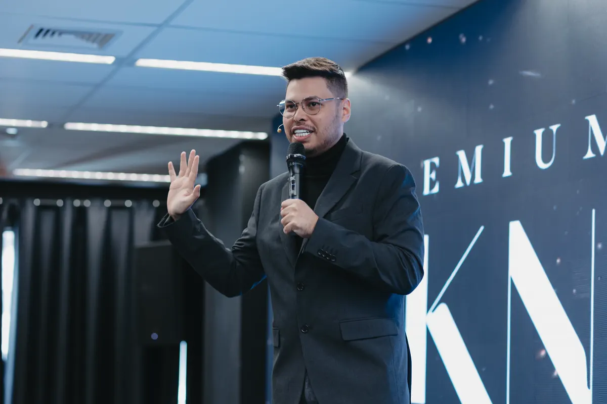

Creator-first
- ObjetivoMaximizar atenção e frequência.
- PautaTendência, formato e oportunidade do dia.
- ProvaAparência, opinião e popularidade.
- CTAGenérico ou desconectado do problema.
- MétricaSeguidores, alcance e volume bruto.
Como transformar a presença de Ed em uma mídia de autoridade que educa o comprador certo, aumenta percepção de valor e abastece a Arquitetura de Receita.
Founder-led não significa founder-dependente. O pensamento do fundador origina a tese; um sistema editorial captura, transforma e distribui esse valor sem fazer toda a operação depender dele.

Conteúdo premium não é uma sequência de opiniões bem editadas. É trabalho real transformado em linguagem própria, prova, memória e conversas qualificadas. A lógica “gancho → retenção → entrega” ajuda, mas precisa servir ao comprador — não à maior plateia.1214
Marcas-pessoa fortes acumulam associações consistentes. O perfil de Ed deve ser reconhecido por um critério econômico claro — não por variedade de assuntos.
Para empresários e experts validados, Ed Souza é o estrategista que transforma crescimento disperso em Arquitetura de Receita: aquisição, produtos e margem/LTV conectados para escalar com mais previsibilidade e menos dependência do dono.
Cada sistema funciona como território, fonte de pautas e ponte de conversão. O conteúdo não precisa inventar um posicionamento paralelo: ele torna a metodologia visível.1
Os quatro vídeos-base convergem em uma sequência: especializar a posição, empacotar a transformação, concentrar a conversão, ofertar com integridade, proteger margem/LTV e retirar o fundador do gargalo. Os timestamps abaixo são aproximados, extraídos de legendas automáticas.
Oferta premium combina problema valioso, especialização, promessa clara, processo próprio e prova.
Abrir vídeo [26] ↗Conteúdo, oferta direta e microiscas alimentam o mesmo destino para concentrar dados e aprendizado.
Abrir vídeo [02] ↗O founder lidera visão e atenção; a equipe absorve edição, distribuição, vendas e operação.
Abrir vídeo [27] ↗Aquisição, entrega, reputação e LTV fazem parte do mesmo sistema de vendas — sem promessa fabricada.
Abrir vídeo [28] ↗Uma peça premium precisa fazer mais do que chamar atenção. Ela deve diagnosticar, criar distinção, demonstrar competência, orientar uma decisão e ganhar distribuição nativa.
Nomeie um problema caro que o empresário já sente, mas ainda interpreta de forma incompleta.
Sintoma → causaApresente uma tese clara que separa Ed do conselho genérico e cria uma nova forma de enxergar o problema.
Crença → contrasteMostre conta, critério, caso, framework, tela ou raciocínio aplicado. Prova contextualizada reduz risco percebido.15
Afirmação → evidênciaConduza a uma escolha executiva: o que priorizar, cortar, proteger, medir ou delegar agora.
Insight → movimentoTransforme a tese em peças nativas e mensure atenção, audiência e resultado comercial em camadas.
Peça-fonte → derivadosDiagnóstico → Evidência → Rota. Confirme o problema, explique a base da análise e diga por onde a decisão será construída. É uma adaptação mais sóbria do princípio promessa–prova–plano.13
Sintoma → causa → evidência → trade-off → decisão. Retenção vem da qualidade do raciocínio e da sequência, não de suspense artificial.
A repetição não é redundância quando cada peça aprofunda uma associação. O objetivo é fazer o ICP pensar em Ed quando aquisição, portfólio, margem ou dependência do dono se tornam o gargalo.
Problemas que parecem táticos, mas revelam falhas de arquitetura: lead barato sem margem, portfólio que multiplica caos, delegação sem critério.
Contrastes úteis: quando mais leads pioram a empresa, quando um novo produto reduz LTV ou quando crescer aumenta fragilidade.
Casos autorizados, diagnósticos, mapas, contas e bastidores que mostram competência em tempo real.
Os três sistemas, checklists, matrizes e critérios que tornam a metodologia memorável e utilizável.
Tensões humanas conectadas a consequência operacional: controle, identidade, delegação, decisão e liberdade.
Diagnóstico, aplicação, material ou conversa — sempre um CTA por peça e compatível com o estágio de consciência.
Mix inicial proposto para teste. Ajustar por qualidade da audiência, estágio da oferta e dados comerciais — não por alcance isolado.
Um bom gancho premium não promete espetáculo. Ele combina tensão específica, consequência econômica e uma decisão que o conteúdo realmente entrega.
A referência atual de Neil Patel sugere três a cinco posts de qualidade por semana, apoiados por Reels e Stories. O próprio Instagram recomenda usar o hub Best Practices e sinais personalizados da conta; portanto, a cadência abaixo é um piloto de 30 dias, não uma regra universal.310
O motor parte de uma peça-fonte: diagnóstico, vídeo, aula, reunião ou análise. A equipe extrai unidades nativas sem publicar o mesmo arquivo em todos os canais.
Diagnóstico: o sintoma caro da semana.
Bastidor do raciocínio + enquete de contexto.
Framework: critérios e sequência de decisão.
Prova: conta, trecho de diagnóstico ou caso.
Tese curta + CTA coerente com a pauta.
Campo, leitura, repertório e proximidade com critério.
Gate: se o ritmo reduzir a qualidade da prova ou a clareza da tese, reduza volume. Se houver capacidade ociosa, aumente variações e testes antes de aumentar temas.
Uma tensão, uma virada e uma decisão. Original, sem marca d’água e com o assunto confirmado no primeiro quadro.7
Organiza raciocínios que merecem ser salvos e enviados para sócios ou equipe.
Mostram trabalho, perguntas e decisões em andamento. Menos lifestyle solto; mais contexto de campo.
Aprofunda uma tensão com caso, convidado ou diagnóstico. O corte nasce depois; a live não é apenas matéria-prima.
Os benchmarks abaixo foram escolhidos por clareza de tese, recorrência de formato e prova observável em segmentos diferentes. A lição é estrutural; a estética e a personalidade permanecem próprias de Ed.
Rigor técnico + propriedade intelectual + demonstração operacional + narrativa humana. Premium aparece no critério, não no verniz.
Não importar tom agressivo, figurino, jargão, rotina ou formato viral sem o lastro que tornou o original crível.
Conteúdo-fonte profundo que vira recortes por alavanca. Para Ed: diagnóstico econômico com rigor e consequência.
FonteFato novo vira interpretação e impacto operacional. Para Ed: ler tendências pela consequência na receita.
FonteConceito, história e vocabulário proprietário. Para Ed: nomear tensões do dono e ligá-las a decisões.
FontePrincípio, conta, regra e aplicação. Para Ed: densidade e prova, sem copiar personalidade ou exagero.
FonteHook contrário ao consenso que termina em matemática. Para Ed: provocar apenas crenças que custam caro.
FonteHistória concreta revela mecanismo invisível. Para Ed: narrativas que terminam em decisão econômica.
FonteUma tese simples organiza conteúdos e produtos. Para Ed: arquitetura, não improviso, como fio condutor.
FonteConteúdo documenta processo e evolução. Para Ed: mostrar julgamento, não rotina vazia.
FonteObservação, reenquadramento e pergunta. Para Ed: notas curtas com especificidade e sinal de negócio.
FontePesquisa, contraste e aplicação. Para Ed: desafiar pressupostos e explicitar o teste.
FonteQuatro semanas para instalar associação, provar a metodologia e abrir conversas. Cada ideia já nasce conectada aos três sistemas e a um estágio do comprador.
Quando o gargalo real é arquitetura.
CTA: salvar o diagnósticoAquisição, produtos e margem/LTV.
CTA: enviar ao sócioCritérios, decisões e desenho de gestão.
CTA: comentar “gargalo”Uma virada estratégica em 120 palavras.
CTA: compartilharPor que lead barato pode comprar crescimento ruim.
CTA: ver a contaChecklist: ascensão, foco e canibalização.
CTA: salvar checklistDemonstrar o raciocínio com dados anonimizados.
CTA: enviar cenárioRespostas agrupadas por padrão, não caso isolado.
CTA: responderMargem, caixa e capacidade de reinvestimento.
CTA: salvarReceita pontual versus arquitetura de cliente.
CTA: enviar ao financeiroOferta, conversão e capacidade de entrega.
CTA: aplicar o testeMapa ao vivo com tese, evidência e decisão.
CTA: lembreteExclusão aumenta clareza e percepção premium.
CTA: autoavaliaçãoContexto, intervenção, resultado e limite.
CTA: abrir estudoRoteiro de triagem pelos três sistemas.
CTA: responder 3 perguntasSíntese do mês e convite para diagnóstico.
CTA: aplicaçãoCurtidas ajudam a ler criatividade. Não encerram a análise. O scorecard conecta conteúdo à qualidade da audiência, intenção, pipeline e resultado econômico.
Registrar tema, peça, canal e UTM. Cruzar com perfil do lead, avanço no pipeline, ticket, receita e margem. Alcance é sinal de distribuição; resultado comercial decide o que escalar.
Retenção, conclusão, salvamentos e compartilhamentos.
SemanalVisitas ao perfil, seguidores do ICP, respostas e DMs relevantes.
SemanalCliques, materiais, aplicações e menções da pauta.
SemanalReuniões, oportunidades, taxa de avanço e origem/UTM.
QuinzenalReceita influenciada, ticket, margem, CAC e LTV por origem.
MensalA meta não é “viralizar em 90 dias”. É criar uma associação clara, uma biblioteca de prova e um loop editorial capaz de aprender com sinais comerciais.
ENTREGA: messaging house + sistema visual + backlog inicial.
ENTREGA: 12–16 peças + baseline de dados.
ENTREGA: prova organizada + ativos de sales enablement.
ENTREGA: playbook v2 orientado por evidência.
O playbook combina referências oficiais, benchmark público e decisões estratégicas propostas. As recomendações de cadência, mix e duração são hipóteses operacionais para teste, não garantias de performance.